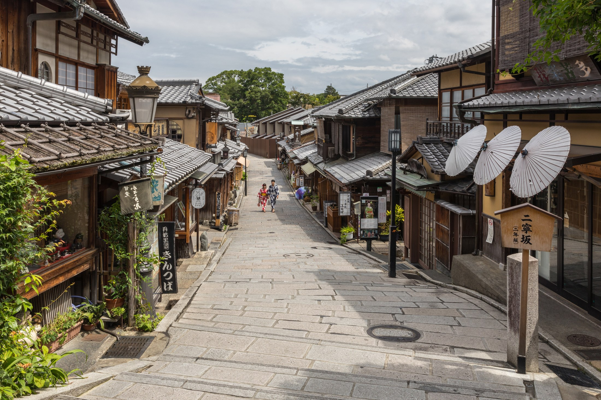

杉﨑の日記
巡る
歩いたこと。考えたこと。
見本写真 ／ 京都・二年坂記事と写真は、レイアウト確認用の見本です。
日々の記録
杉﨑見本写真：Basile Morin / Wikimedia Commons · CC BY-SA 4.0（縮小・表示範囲を調整）

杉﨑の日記

見本写真 ／ 京都・二年坂記事と写真は、レイアウト確認用の見本です。
見本写真：Basile Morin / Wikimedia Commons · CC BY-SA 4.0（縮小・表示範囲を調整）